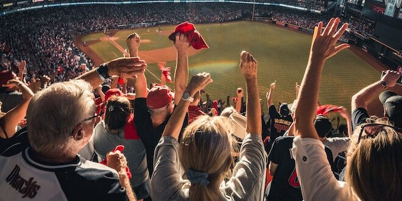

No specific achievements to mention at the moment, but I enjoy playing and watching cricket and volleyball.
I have a great passion for cricket and volleyball. I love the excitement and teamwork involved in cricket matches. Similarly, volleyball is a thrilling sport that requires coordination and strategy.
Aside from sports, I also have a keen interest in traveling. Exploring different places, experiencing diverse cultures, and trying new cuisines are some of the things I enjoy during my travels.
